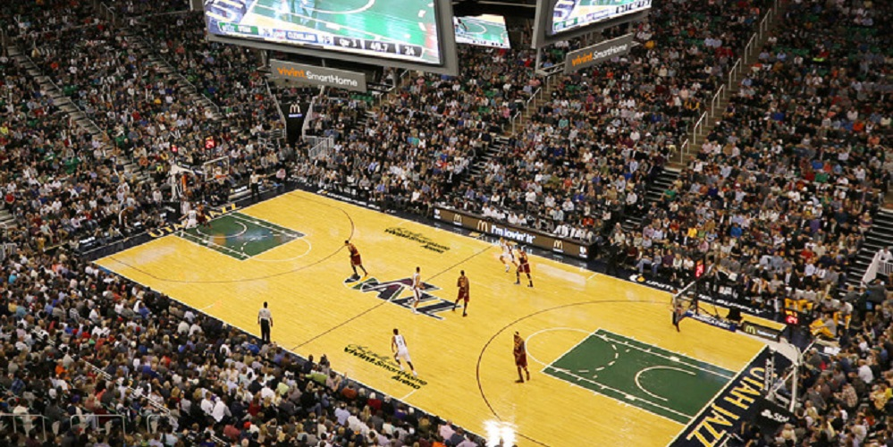
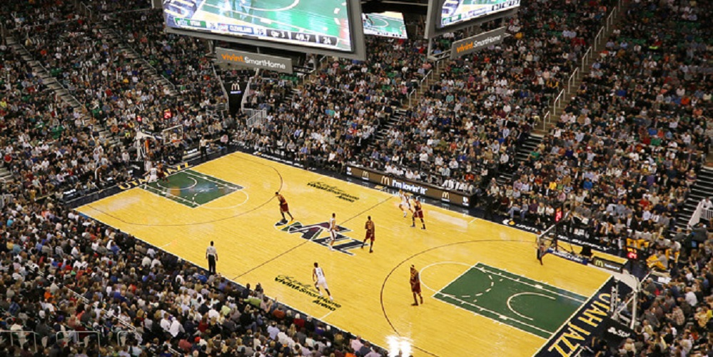
Utah Jazz (Jazz de Utah) es un equipo de la NBA de la ciudad de Salt Lake City, Utah. El equipo no es originario de Utah, sino que fue transferido desde Nueva Orleans, de ahí el nombre del género musical.
Los Angeles Clippers (en español: Clípers de Los Ángeles) es un equipo de baloncesto de la NBA con sede en Los Ángeles, California. Fundado en 1970, juegan en la División Pacífico de la Conferencia Oeste y disputan sus partidos de casa en el Staples Center, al igual que Los Angeles Lakers. El 8 de abril de 2013, tras batir a Los Angeles Lakers por 109-95 consiguen su primer título de división de la NBA. La consecuencia de esos resultados ha sido, entre otras cosas, los tres cambios de ciudad que ha sufrido el equipo desde su fundación, pasando por Buffalo, San Diego y actualmente Los Ángeles.Índice
La franquicia fue fundada en 1923 con el nombre de Rochester Seagrams, pasando posteriormente por las ciudades de Cincinnati y Kansas City/Omaha antes de trasladarse en 1985 a Sacramento. Los Kings disputan sus partidos como locales en el Golden 1 Center. Los éxitos a lo largo de su historia han sido el campeonato de la NBL de 1946 y el de 1951 de la NBA En 2013 los propietarios del equipo, la familia Maloof, intentaron vender la franquicia a un grupo empresarial ubicado en Seattle, en un intento de recuperar éstos los Seattle SuperSonics pero la NBA recomendó paralizar la operación2 y finalmente la franquicia se quedó en la ciudad de Sacramento
Minnesota Timberwolves (Lobos de Minnesota) es un equipo de baloncesto que juega en la NBA, y tiene su sede en Minneapolis, perteneciente al estado de Minnesota. Entraron en la liga tras la expansión de 1989. Con anterioridad, la ciudad había sido sede de los míticos Minneapolis Lakers, actualmente en Los Ángeles.
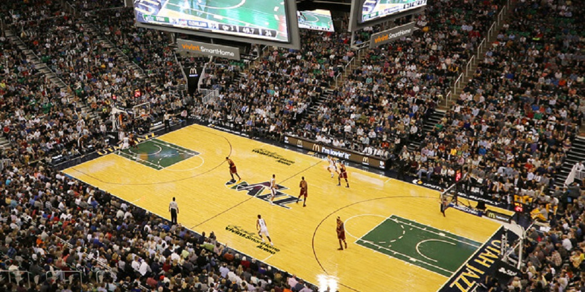
Utah Jazz (Jazz de Utah) es un equipo de la NBA de la ciudad de Salt Lake City, Utah. El equipo no es originario de Utah, sino que fue transferido desde Nueva Orleans, de ahí el nombre del género musical.
 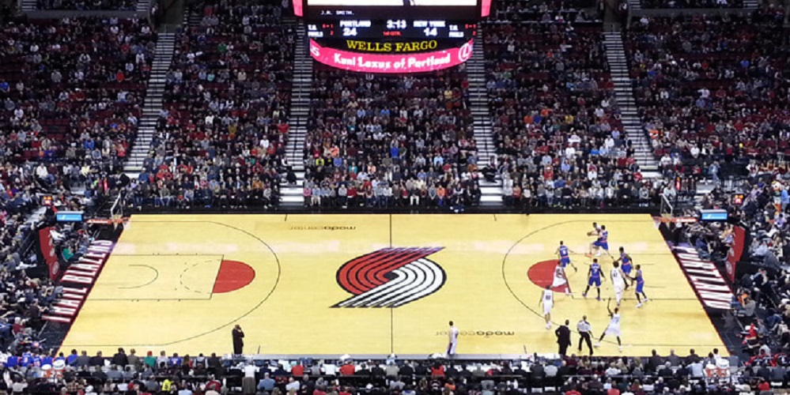
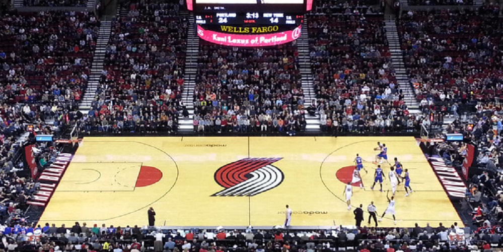
Portland Trail Blazers es un equipo base en Portland, Oregón, juega en la Conferencia Oeste. El equipo entró en la NBA en 1970 y es la única franquicia profesional en Oregón. Los Blazers han llegado a las Finales de la NBA en tres ocasiones, ganando su único campeonato en 1977. Además, el equipo se ha clasificado para playoffs en 25 de las 36 temporadas que llevan en la NBA desde su existencia, Seis jugadores que pertenecen al Basketball Hall of Fame han vestido la camiseta de los Blazers (Lenny Wilkens, Bill Walton, Clyde Drexler, Drazen Petrovic, Arvydas Sabonis y Scottie Pippen)4 y cuatro han sido reconocido como uno de los 50 mejores jugadores de la historia de la liga (Scottie Pippen, Lenny Wilkens, Bill Walton y Clyde Drexler).
 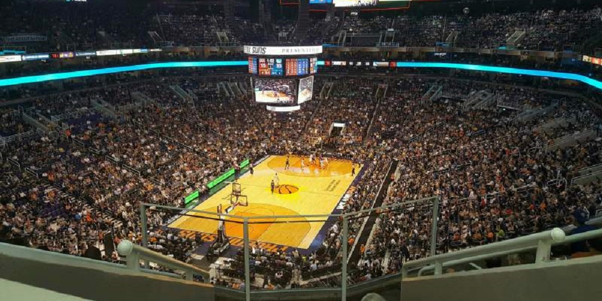
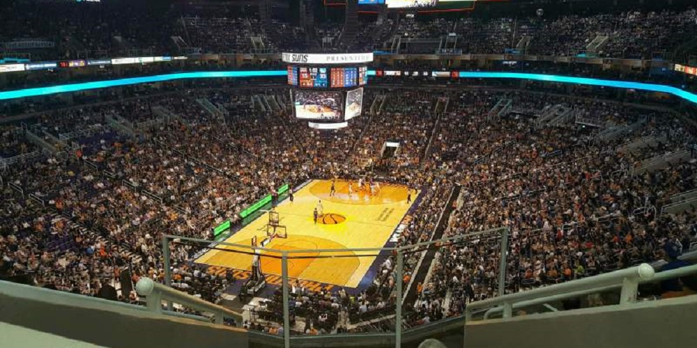
Phoenix Suns es un equipo con sede en Phoenix, Arizona fundado en 1968. Llegaron a la NBA en la expansión de ésta en 1968, los Suns juegan en la Conferencia Oeste. Disputa sus partidos de local en el Talking Stick Resort Arena. En sus 51 años de historia, el equipo ha ganado 2 títulos de conferencia, y ha disputado dos Finales de la NBA, en 1976 y 1993, perdiendo ambas. Sus jugadores más emblemáticos son Charles Barkley, contemporáneo a Michael Jordan, con quien disputó las finales de 1993, y compartió el denominado Dream Team de Estados Unidos en el año 1992; junto con el base Steve Nash, 2 veces consecutivas elegido MVP (2005 y 2006) de la NBA. Es, además, el máximo asistidor en la historia de la franquicia.
Los New Orleans Pelicans1son una franquicia profesional de baloncesto estadounidense con sede en Nueva Orleans, Luisiana. El equipo compite en la División Suroeste de la Conferencia Oeste de la National Basketball Association (NBA). Disputan sus encuentros como locales en el Smoothie King Center. Los Pelicans fueron fundados como New Orleans Hornets en el año 2002 cuando el propietario de los Charlotte Hornets, George Shinn, recolocó la franquicia en Nueva Orleans. Debido a los daños causado por el Huracán Katrina en 2005, ya en 2008 volvieron a Nueva Orleans, nunca han ganado un título, sin embargo han salido de esta franquicia destacados jugadores como Anthony Davis o Chris Paul.
 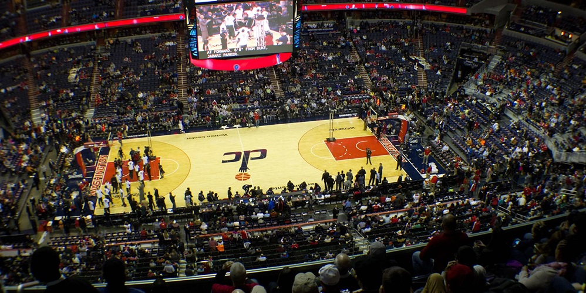
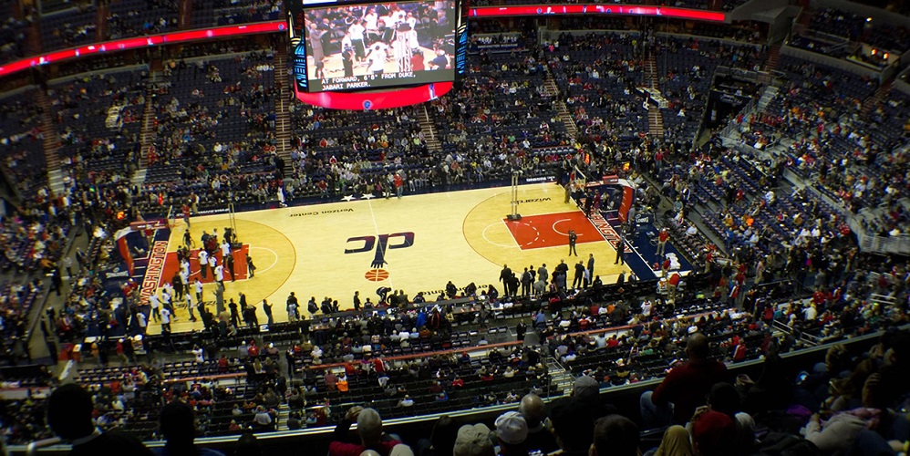
Washington Wizards es un equipocon sede en la capital de Estados Unidos, Washington D. C. Los Wizards fueron conocidos hasta 1997 como Bullets (balas), pero cambiaron su nombre para evitar asociaciones con la criminalidad que dañasen la imagen de la ciudad. Ganaron el campeonato de la NBA en 1978, finalizando además subcampeón en la temporada siguiente. Desde su fundación en 1961, la franquicia ha pasado por tres ciudades: Chicago, Baltimore y Washington. Su terreno de juego es, desde 1997, el Capital One Arena, pabellón con capacidad para 20.356 espectadores. Además, el considerado por muchos mejor jugador de la historia, Michael Jordan, jugó en el equipo entre 2001 y 2003.
Brooklyn Nets es una franquicia d con sede en Brooklyn (Nueva York). El equipo fue fundado en 1967 con el nombre de New Jersey Americans y comenzó jugando en la ABA. Con este nombre ingresó en la NBA en 1976. Posteriormente se mudaron a Nueva Jersey, donde se llamaron New Jersey Nets, hasta que en el año 2012 se mudaron a Brooklyn, en el estado vecino de Nueva York, y pasaron a ser denominados Brooklyn Nets. Juegan en la Conferencia Este y disputan sus partidos como local en el Barclays Center. A lo largo de su historia, los Nets han logrado 2 títulos de conferencia. Sus éxitos más recientes datan de 2002 y 2003, donde alcanzaron de manera consecutiva la final de la NBA.
Los Detroit Pistons es un equipo profesional de baloncesto de la NBA con sede en la ciudad de Detroit (Míchigan). Los Pistons se fundaron en 1941, jugando primeramente en la NBL hasta su entrada en la NBA en 1948. Hasta 1957, el equipo jugó en Fort Wayne, Indiana. Entre los éxitos de la franquicia se encuentran dos campeonatos de la NBL y otros tres de la NBA, dos de ellos consecutivos en 1989 y 1990, y el tercero en 2004. También cuentan con 7 títulos de conferencia y 15 de división (4 de ellos pertenecen a la NBL). Sus partidos locales los juegan en Little Caesars Arena. Entre sus jugadores más destacados se encuentran Isaiah Thomas y Ben Wallace.
 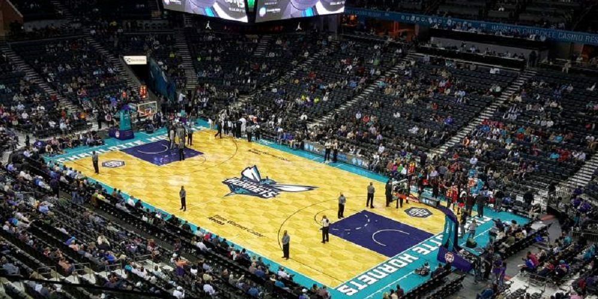
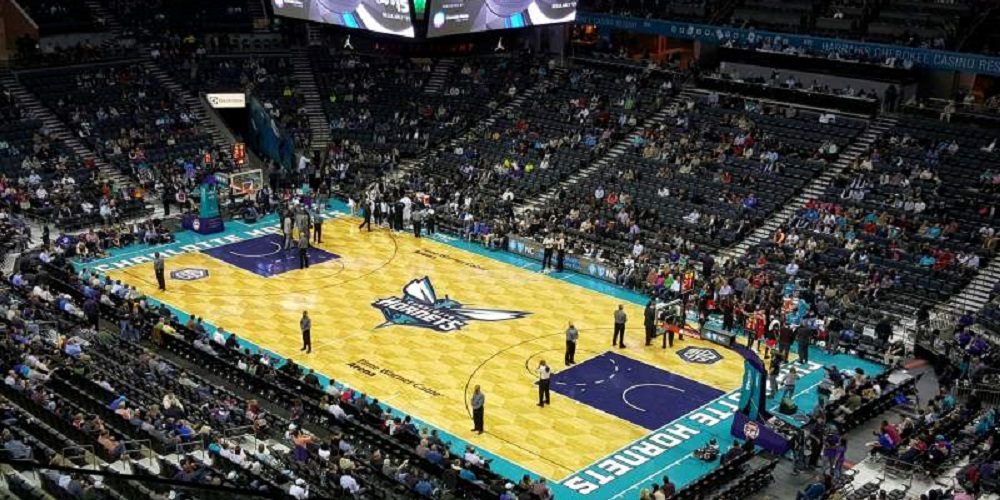
Los Charlotte Hornets son un equipo profesional de baloncesto estadounidense con sede en Charlotte, Carolina del Norte. Compiten en Conferencia Este de la NBA y disputan sus partidos como locales en el Spectrum Center. La franquicia es propiedad del exjugador de baloncesto Michael Jordan, quien adquirió el equipo en el año 2010 tras años como accionista minoritario. Los Hornets originales fueron fundados en 1988 como un equipo de expansión, propiedad del empresario George Shinn. Entre sus jugadores destacados encontramos a Robert Parish, a Alonzo Mourning y actualmente a Kemba Walker.
 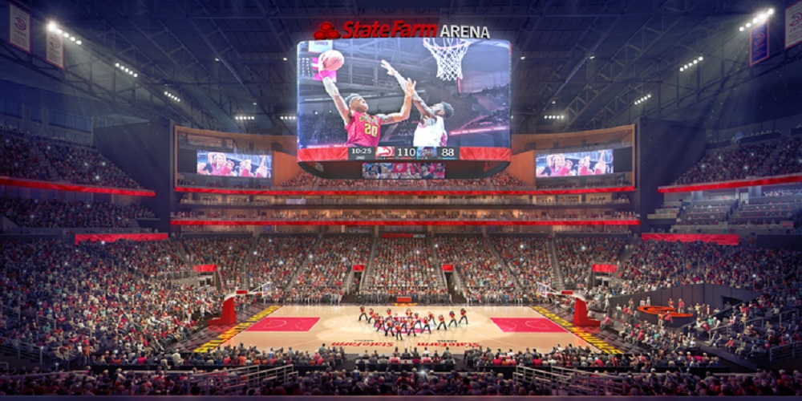
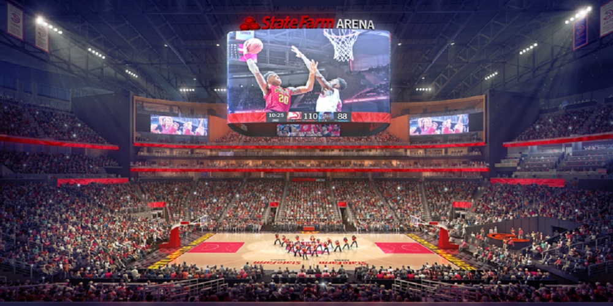
Atlanta Hawks es un equipo de baloncesto de la NBA con sede en la ciudad de Atlanta, Georgia. El equipo fue fundado en 1946 como Tri-Cities Blackhawks en la zona del río Misisipi.. Finalmente, en 1968 se movieron a Atlanta, Georgia. Entre los títulos destacan, aparte del campeonato de la NBA, 4 títulos de conferencia y 14 de división. Los Hawks juegan sus partidos como locales en el State Farm Arena. Entre sus jugadores destacados se encuentra Dominique Wilkins, Bob Petitte y Pete Maravich.
 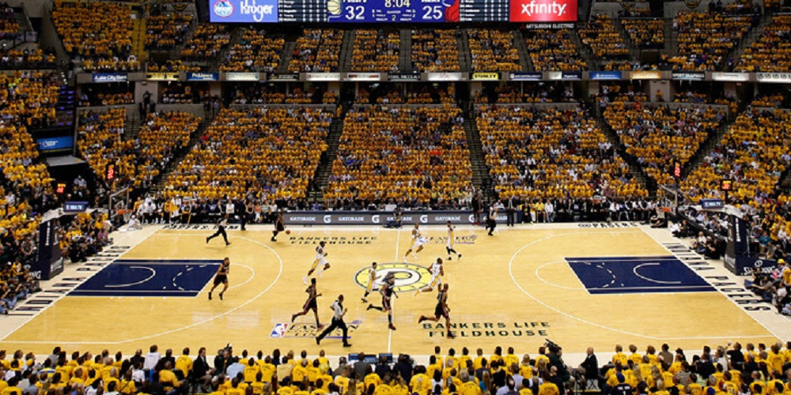
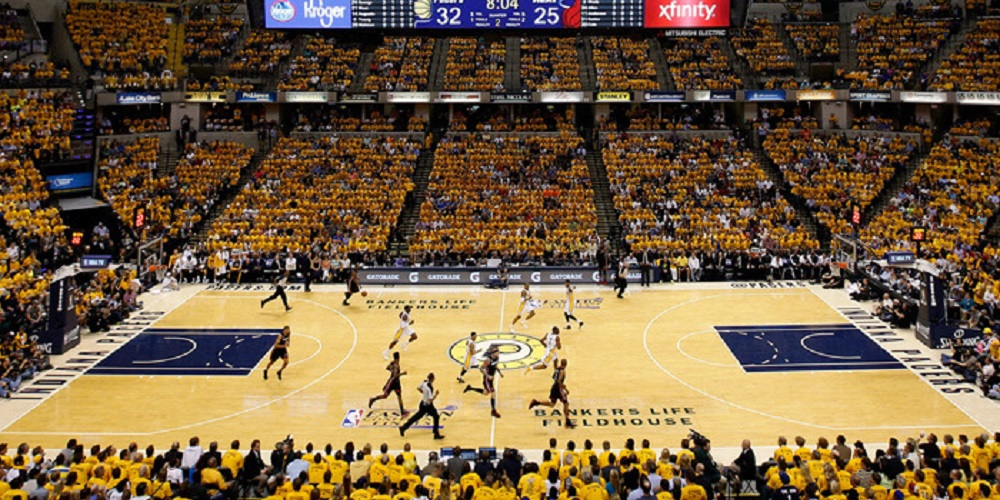
Indiana Pacers es un equipo de baloncesto profesional de la NBA con sede en Indianápolis, Indiana. Su mayor logro fue haber llegado a las Finales de la NBA en el año 2000, donde perdieron ante Los Angeles Lakers, por 4-2. Juegan en el Bankers life Fieldhouse y su fundación fue en 1967, entre sus jugadores más destacados encontramos a Reggie Miller, Larry Brown , Paul George y actualmente a Víctor Oladipo y
 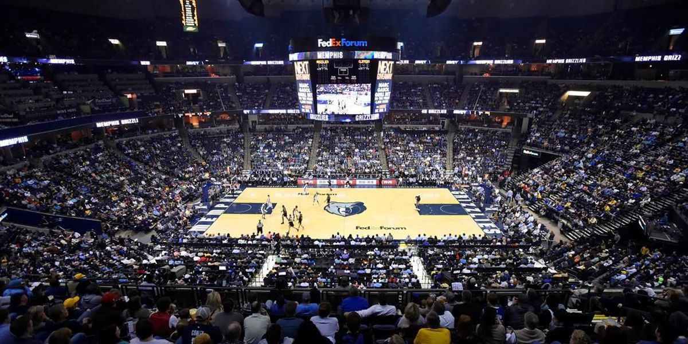
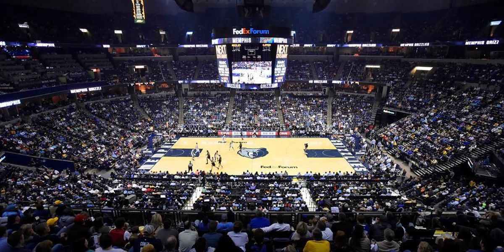
Memphis Grizzlies es un equipo de baloncesto de la NBA con sede en Memphis, Tennessee. Es miembro de la División Suroeste dentro de la Conferencia Oeste. Disputan sus partidos como local en el FedExForum, no cuentan con títulos debido ha su corta existencia sin embargo han sacado a jugadores como los hermanos Gasol, Mike Miller, Mike Conley y Zach Randolph

Orlando Magic es una franquicia de la NBA con sede en Orlando, Florida cuyo pabellón es el Amyway center. Comenzó a disputar la liga tras la expansión de la misma de 1989. Carecen de títulos nba. Sin embargo tienen dos títulos de conferencia y en la franquicia han jugado jugadores como Shaquille O´neal, Patrick Ewing, Tracy Mcgrady o Vince Carter.